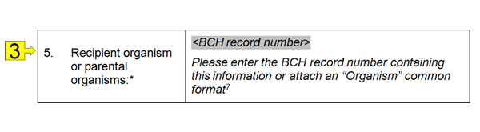

Los Formatos Comunes fuera de línea son formularios estándar, disponible en el CIISB en formato MS para ser descargados y asistir a los usuarios a recolectar y organizar la información antes de su envío. Son copias fuera de línea de los formularios de registros en línea. Los formularios contienen varios campos diferentes para ingresar información. Al igual que en los Formatos Comunes en línea, también hay campos que son obligatorios y que deben ser completados antes que un registro pueda ser publicado. A su vez, hay campos en los que se requieren distintos tipos de información (texto, números, fechas) e ingresar el tipo incorrecto de información (por ejemplo: agregar texto de un campo de números) bloqueará la publicación del registro.
La siguiente lista describe los tipos de campos que encontrará en los formularios.
-
Casilleros de selección: Seleccione las opciones que correspondan de la lista.
-
Texto: Ingrese texto libremente.

-
Referencia a otro registro: Al igual que en los formularios de registro en línea, algunos campos pueden contener una referencia a otro registro. En este caso un “número de registro del CIISB” es ingresado; esto es, el número que se le asignó al registro referenciado en el CIISB. A veces el registro a ser referenciado no existe todavía: en estos casos usted podrá optar por crear el registro a referenciar usando el Formato Común fuera de línea correspondiente y adjuntándolo.

-
URL y nombre del sitio web: Proporciona el nombre y la dirección de un sitio web.
-
Archivo adjunto: Adjuntar un documento al Formato Común fuera de línea.
-
Fecha: Ingrese una fecha válida usando el formato de fecha especificado. Por ejemplo, si el formato de fecha especificado es ‘YYYY-MM-DD’, entonces la fecha “20-ene-2010” debe ser ingresada como “2010-01-20”.
-
Dirección de correo electrónico registrada: Ingrese una dirección de correo electrónico que haya sido registrada en el CIISB para identificar la persona referenciada.
-
Valor: Ingrese un valor numérico.
-
Moneda: Ingrese una moneda.
-
Nombre del país: Ingrese una nombre de país válido.
-
Idioma: Ingrese un idioma cuyo código sea válido.

-
Lista desplegable: Una lista de opciones es desplegada al hacer clic en el campo. Seleccione una de estas opciones.
Al completar los Formatos Comunes fuera de línea, las referencias a otros documentos del CIISB pueden ser proporcionadas ingresando el número de registro CIISB del registro referenciado. Cuando se requiere una referencia a un registro nuevo, un Formato Común conteniendo la información requerida debe ser adjuntado.